Climbing
Climbing This article will delve into the number of deaths during expeditions on Kilimanjaro and identify the main causes. How dangerous is climbing Mount Kilimanjaro compared to other Seven Summits? Is there official mortality data, and is the mountain becoming more or less dangerous over time?
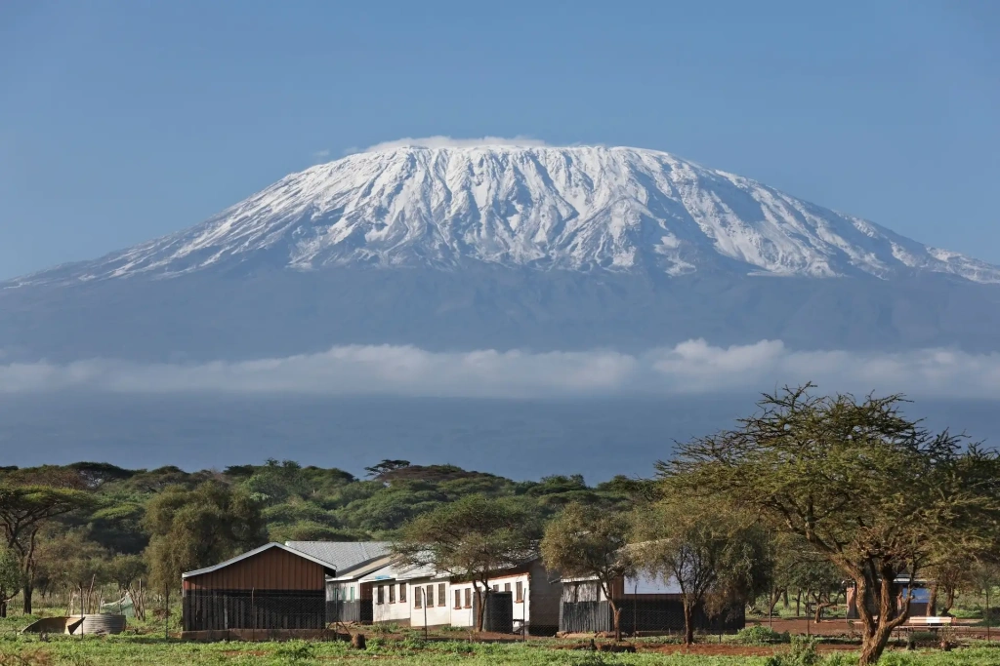
Kilimanjaro stands at 5,895 meters (19,341 feet) above sea level. It is located in East Africa within Tanzania, in a protected national park zone. The park administration oversees all expeditions and maintains the infrastructure on the mountain. However, the administration does not publish detailed reports on ascents and prefers not to disclose mortality data on the mountain. Therefore, there are no official statistics for Mount Kilimanjaro deaths.
As a tour operator on Mount Kilimanjaro, we have been in business for over 10 years. We have gathered our own statistics on travelers who hiked the mountain with us, totaling over 20,000 people, as Angelino Adventures is the . Additionally, we have some non-public information, which we will supplement with open data. All this will help us answer questions about mountain climbing deaths on Kilimanjaro.
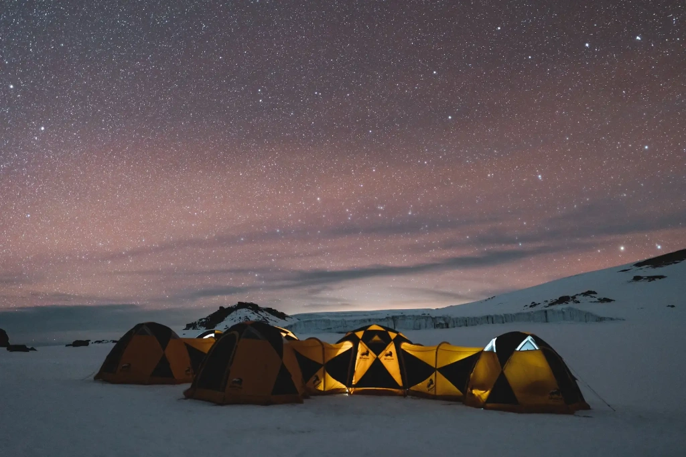
How many people die on Kilimanjaro?
Now we will present the known facts and figures about Mount Kilimanjaro deaths, as well as the summary of conclusions we have reached in this article.
Over the past six years, an average of set out to climb Mount Kilimanjaro annually. The mortality rate among tourists is 0.02%. On average, 10 people die on Kilimanjaro each year. This number may be slightly higher in some years, considering those not evacuated from the mountain and those not seeking medical help in Tanzania. The main causes of Mount Kilimanjaro deaths are high-altitude pulmonary and cerebral edema, forms of severe altitude sickness. Pulmonary edema accounts for 76% of fatalities on average. This condition arises due to a too-rapid ascent. it is more frequent when people choose short climbing Mount Kilimanjaro itineraries lasting less than six days.
In the sections below, you will find more details: current statistics and conclusions from doctors who have studied those who sought medical help on Kilimanjaro or died. We will explain in more detail the mechanism of health complications that lead to death. And most importantly for those planning a climb to Kilimanjaro, we will provide recommendations on how to avoid becoming part of the tragic statistics. For example, in 10 years of work, no clients have died during Angelino Adventures expeditions.
Let's start with stories about the most unusual deaths on Mount Kilimanjaro.
Notable death cases on Kilimanjaro
There are quite a few records of climbers who died on Kilimanjaro during expeditions. The most common causes include altitude sickness, acute mountain sickness, heart attacks, complications from chronic diseases such as diabetes, and accompanying conditions that can play a tragic role, such as hypothermia and dehydration.
We will not list the typical cases. Here we will talk about the rare causes of death on Kilimanjaro, starting with mentions of two plane crashes that are almost unknown.
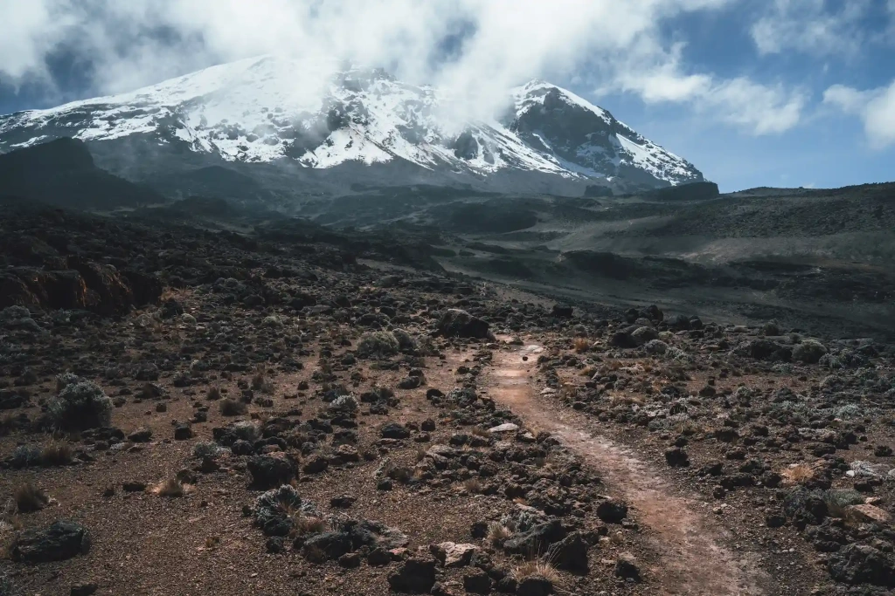
Lesser-known plane crashes of 1935 and 1978
On April 20, 1935, a private Farman 359 aircraft crashed on the slopes of Kilimanjaro. It was on an international flight from Madagascar to France. Specifically, the tragedy occurred during a flight between Moshi in Tanzania and Juba in South Sudan. The aircraft was piloted by two individuals: the owner-pilot and the co-pilot. Shortly after takeoff from Moshi, the plane encountered a downdraft during a storm and crashed into the mountain. The co-pilot sustained minor injuries, but the owner, Maurice Finat, was killed.
On August 15, 1978, another crash occurred, for which there are no official records. It is known that the tragedy involved passengers of a Piper PA-32-300 Cherokee Six on a charter flight. The light single-engine aircraft collided with a tree on the northeast slope of Kilimanjaro and crashed. Presumably, there was insufficient fuel in the tank. Poor weather conditions were also reported. All seven people on board died: the pilot, four Italian tourists, one German, and one Kenyan.
The largest aviation disaster in Tanzania
The largest single contribution to Kilimanjaro's mortality statistics was an airplane crash rather than expeditions.
On May 18, 1955, an East African Airways Douglas DC-3 passenger plane crashed into Kilimanjaro. It was flying between Dar es Salaam and Nairobi, the capital of Kenya. There were 16 passengers and four crew members on board, including the Captain, Jack Quirk. This was his 11th flight on this route. A co-pilot accompanied him, First Officer Michael Cairncross, who had flown this route 26 times.
The day was cloudy, so the pilots navigated the 3,200-meter flight partially by sight and partially by instruments. The plane was flying directly from Dar es Salaam to Nairobi, with the dangerous 5,895-meter Mount Kilimanjaro standing in its path. There are two routes for this flight: a direct one and an alternative one, which was relatively new at the time. Unfamiliar with the latter, the pilots decided to fly directly and planned to circumnavigate the mountain when necessary. After the crash investigation, the captain was found responsible for choosing a dangerously close trajectory to Kilimanjaro.
When the aircraft did not arrive in Nairobi at the expected time and the crew did not make contact, an emergency was declared, and a search operation began.
Four days later, the wreckage was found on the southeastern slope of Mawenzi, the second of Kilimanjaro's three volcanoes. The investigation concluded that at 12:25 PM on May 18, the plane, at approximately 4,630 meters, deviated from its course and crashed into the mountainside, exploding immediately. The debris and bodies of the victims slid down several hundred meters. All 20 people on board perished.

This plane crash remains the largest by the number of victims in Tanzania. The remains of the deceased were never buried. The Kilimanjaro Mountain Club organized searches for bodies several years later, but only some bones were found. This area is not visited by climbers and is considered little known, with rain forest below.
The disappearance of a 24-year-old American on Kilimanjaro:
Michael Sullivan was a solo traveler who decided to quickly climb Africa's tallest mountain. He was on an extended tour, starting in Europe, visiting Middle Eastern countries, and descending to Kilimanjaro from northern Africa via the Nile. His long journey, which began in 1971, was full of adventures, including numerous interesting encounters, witnessing civil wars in Afghanistan and South Sudan, tropical diseases, and a spontaneous decision to climb the "Roof of Africa."
In April 1972, heavy rains marked the long rainy season, traditionally lasting in northern Tanzania from mid-March to early June. Despite being advised against the dangerous endeavor, Sullivan decided to go into the mountains despite bad weather and lack of equipment. Completely unprepared, he embarked on a risky expedition in early April. It seems he started near the current Umbwe route. At that time, the national park did not exist, and Kilimanjaro expeditions were unsupervised.
When Sullivan did not return after several days, a search expedition was organized, but no trace of him was found. Subsequent search attempts, including those using airplanes, were also unsuccessful. It wasn't until September of that year that other climbers spotted his body. It was in a sitting position as if he had simply sat down to rest. The exact cause of his death remains unknown.
Michael Sullivan's burial took place a year later. Kenyan climbers, who wished to remain anonymous, fulfilled the request of Sullivan's father, who had attempted to find his son's body but could not climb high enough. The story of Sullivan's last journey can be read in the book of letters "Love, Mike."
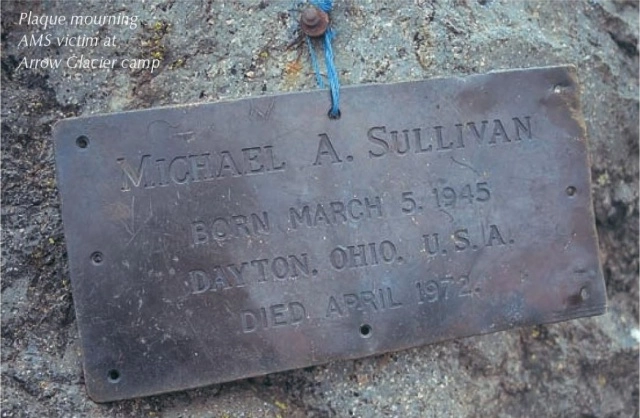
The disappearance of the Piper PA-31 Navajo aircraft
On November 1, 1997, a light twin-engine Piper PA-31 Navajo aircraft took off from Nairobi airport, carrying cargo and headed for Zanzibar. The plane was piloted by a single pilot, with no passengers on board. It never arrived in Zanzibar.
Formal searches were conducted along the presumed route in Kenya and Tanzania for the entire following month, but they were unsuccessful. The plane had vanished.
Nearly six years later, in August 2003, the wreckage of the PA-31-350 was discovered on Kibo, the third of Kilimanjaro's three volcanoes, at an altitude of 4,694 meters. This is significantly above the pilot's permitted maximum altitude of 3,500 meters. There was no report on the remains of the pilot or the cargo.
Deadly rockfall at the Western Breach
On January 6, 2006, a tragic event claimed the lives of three climbers. They were sleeping in tents at Arrow Glacier Camp, named after the glacier that once existed there. The disappearance of the glacier weakened the Western Breach's rock wall, making rockfalls possible. That night, several large rocks fell from the wall, hitting the camp. Several people were injured, and three climbers lost their lives.
Following this accident, the Western Breach route was closed for a couple of years. Later, expeditions were allowed again, but with restrictions and a waiver of liability from the national park ranger organization. Anyone who decides to climb through the Western Breach assumes all risks.
The Western Breach is a partially collapsed wall of Kibo's volcanic crater in the center of Kilimanjaro. The breach was formed due to a volcanic eruption and lava flow.
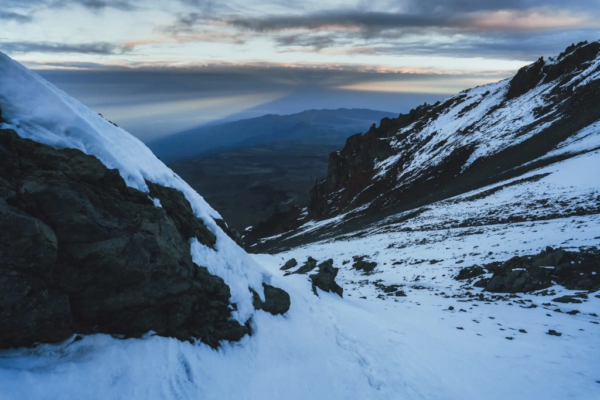
Cessna U206F plane crash
In November 2008, four tourists embarked on a small plane for a scenic flight over Kilimanjaro. The plan was to fly along the mountain ranges and then over Kenya's Amboseli National Park. On board were an Italian dentist and his wife, along with another couple. The plane was piloted by an experienced aviator.
While flying near Kilimanjaro, the plane encountered a strong air current coming from the mountain. Initially, the plane was thrown upwards and then quickly descended. The cloud cover was dense at that time, so the pilot could not see the ground while trying to stabilize the plane. At that moment, climbers on Kibo saw a small plane emerging from the clouds, heading rapidly towards the saddle between Kibo and Mawenzi. Only then did the pilot see the ground, but it was too late. The plane crashed into the mountain and broke apart.
All four passengers died instantly from the impact. The pilot sustained serious injuries but survived thanks to a quickly organized rescue expedition. The crash occurred at an altitude of 4,370 meters.
Lightning strikes an experienced mountaineer
In January 2013, a group led by renowned mountaineer Ian McKeever was climbing Kilimanjaro. McKeever was an experienced climber with several records to his name, both local to the UK and global. He held the record for the fastest ascent of the Seven Summits, completing it in .
On Kilimanjaro, he helped set at least two records: the ascent of the largest group of 145 people and the youngest European (his 10-year-old godson) to reach the summit. McKeever climbed Kilimanjaro an average of 10 times a year, maintaining a 100% success rate for his groups. His groups often undertook charitable climbs as part of the Kilimanjaro Achievers Organization.
In early 2013, he led a group of 20 people to the summit of Kilimanjaro. On the third day of the expedition, near Lava Tower, he was struck by lightning and died instantly.
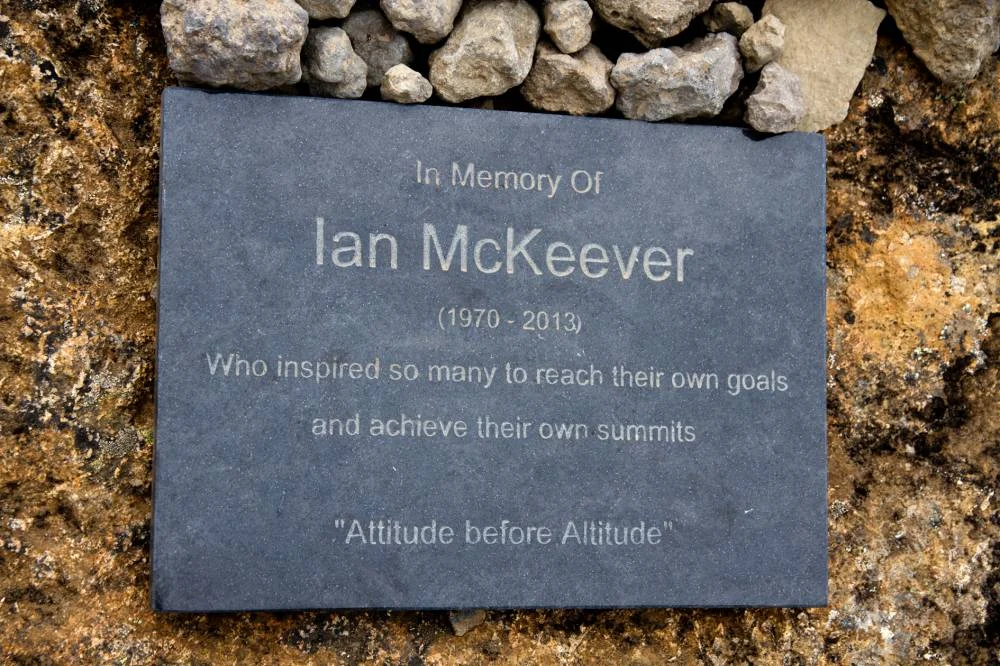
Death from a falling boulder
In September 2015, American motivational speaker Scott Dinsmore was climbing Kilimanjaro as part of an expedition. Dinsmore was known for inspiring people to follow their dreams and work for them. In 2015, he embarked on a world tour, and Tanzania became the 20th country he visited, and unfortunately, his last.
On the sixth day of the expedition, at an altitude of 5,790 meters, Dinsmore was climbing to the peak of the "Roof of Africa." At that moment, a large boulder fell from above, killing the 33-year-old climber. This fatal rockfall adds to the list of rare but real dangers on Kilimanjaro.
How many people die on Kilimanjaro annually?
According to indirect reports, an average of 3 to 10 climbers die on Kilimanjaro each year. Some Kilimanjaro-related website site the number six to seven climbers, but without providing comprehensive statistics. Notably, journalistic investigations have cited the figure of 10 tourists annually, mentioned in German Der Spiegel and British The Times in 2006 and 2008, respectively. It is also known that not all deaths related to Kilimanjaro expeditions are included even in this unofficial statistic. For example, if someone becomes ill on the mountain, is evacuated, and later dies in a hospital or elsewhere, they are not counted in the statistics.
Additionally, deaths of porters and guides who accompany every expedition and are responsible for transporting gear are reported to be double that of tourists, approximately 20 per year. This figure could be higher as porters often fall ill during expeditions and seek treatment at home, where the outcome is not tracked. In such circumstances, it is difficult to ascertain the exact cause of death.
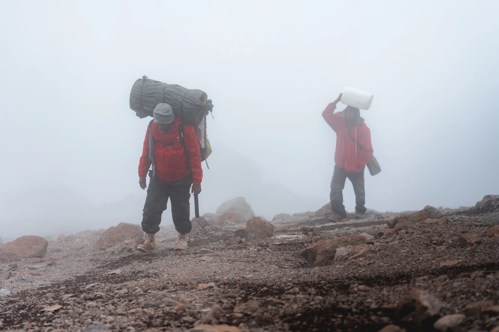
In these statistics, three factors raise concerns: their unofficial nature, the age of the data, and the unclear medical circumstances of the deaths. The first issue is unavoidable—if the National Park Administration keeps internal records of fatalities, they do not publish reports. It seems that the management does not want to deter travelers with grim statistics. We believe, however, that transparency and understanding the causes of mortality provide reassurance. So, we will try to analyze all available data.
We will return to the medical analysis of the causes of death later. It will help us understand what exactly people are dying from and, therefore, identify who is at risk. But let's deal with the potential obsolescence of the data right now. We have insider information—current statistics on tourists on Kilimanjaro for the past six years. Knowing that in the approach to organizing expeditions over twenty years, we will extrapolate the death rates to recent figures to obtain the current mortality rate on Kilimanjaro.
How many people go on Kilimanjaro expeditions? And how many die on the mountain?
In 2008, the year referenced by journalists from Der Spiegel and The Times, 45,000 tourists went to Kilimanjaro. Taking the maximum number of deaths, the mortality rate for tourists would be .
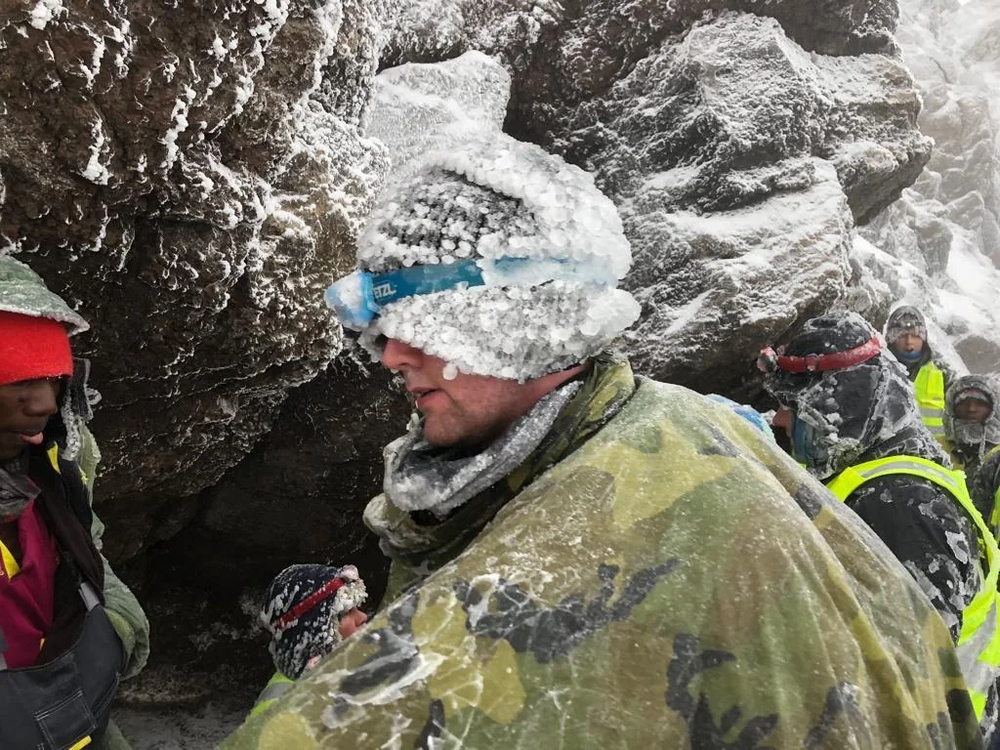
Separate calculations must be made for porters and guides working on the mountain. On average, there are 3-4 support team members per climber. Thus, the maximum number of porters on the mountain in one year is 180,000 people. With 20 deaths, the risk percentage would be .
Now let's look at the new figures showing the from 2018 to 2023. This period includes two COVID years when the flow of foreign tourists significantly decreased, and domestic tourism in Tanzania was actively encouraged. With these years excluded, the average annual number of climbers on Kilimanjaro is . With a 0.02% risk of death, an estimated 13 tourists could die each year.
How many tourists climb Kilimanjaro each year?
We took the maximum number of deaths, so real figures might be lower some years. If we take the minimum number of deaths per year—3 people—the mortality rate will significantly decrease to 0.00667%. This means that over the past six years, an average of 4 tourists could die each year. Thus, the actual figure ranges from 4 to 13, likely about ten climbers.
What Is the Mortality Rate on Kilimanjaro?
Is Kilimanjaro harder than Mount Everest?
Mount Everest is not the most difficult mountain to climb on Earth but, being the highest, it is the most famous. Its height is 8,848 meters (29,029 feet) above sea level. Different approaches to calculating heights exist, as detailed in our article "Is Everest really the tallest mountain in the world?"
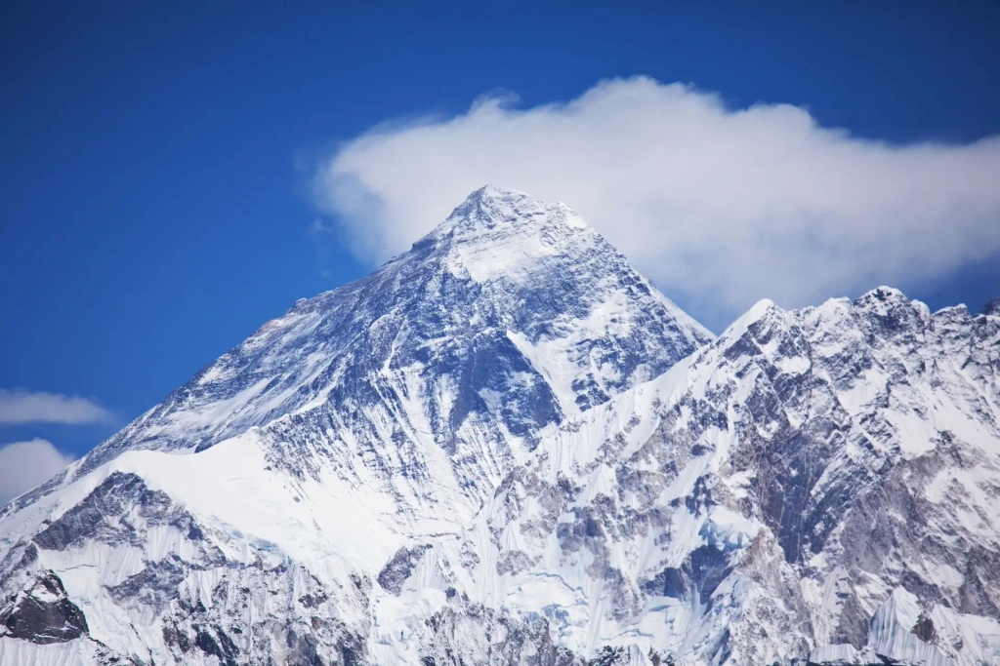
Mount Everest has a lower compared to many other mountains: Annapurna I (27.2%), K2 (22.8%), Nanga Parbat (20.75%), Dhaulagiri I (13.5%), and five more popular peaks among climbers. The mortality rate on Mount Everest is . Read our special material about why people die on Everest and the most famous tragedies.
Which mountain is more dangerous: Kilimanjaro or Everest?
Kilimanjaro and the Death Zone
The Death Zone refers to altitudes above 8,000 meters (26,000 feet) above sea level. Above this limit, the oxygen content in the air drops so much that a human cannot survive in this zone for long. Those who linger at such altitudes without supplemental oxygen experience a rapid decline in bodily functions and die.
There are 14 mountains in the world exceeding 8,000 meters in height. Everest is the most alluring among them. Not all climbers can survive in the harsh conditions in the Death Zone, especially when factors like avalanches come into play. This is why the slopes of these mountains are littered with the bodies of fearless people who challenged fate. Dhaulagiri I and Annapurna I each have about 60 bodies, Nanga Parbat around 70, Manaslu and K2 around 80, and Everest about 200. For multiple reasons, it is physically impossible to bring them down or bury them at such heights.
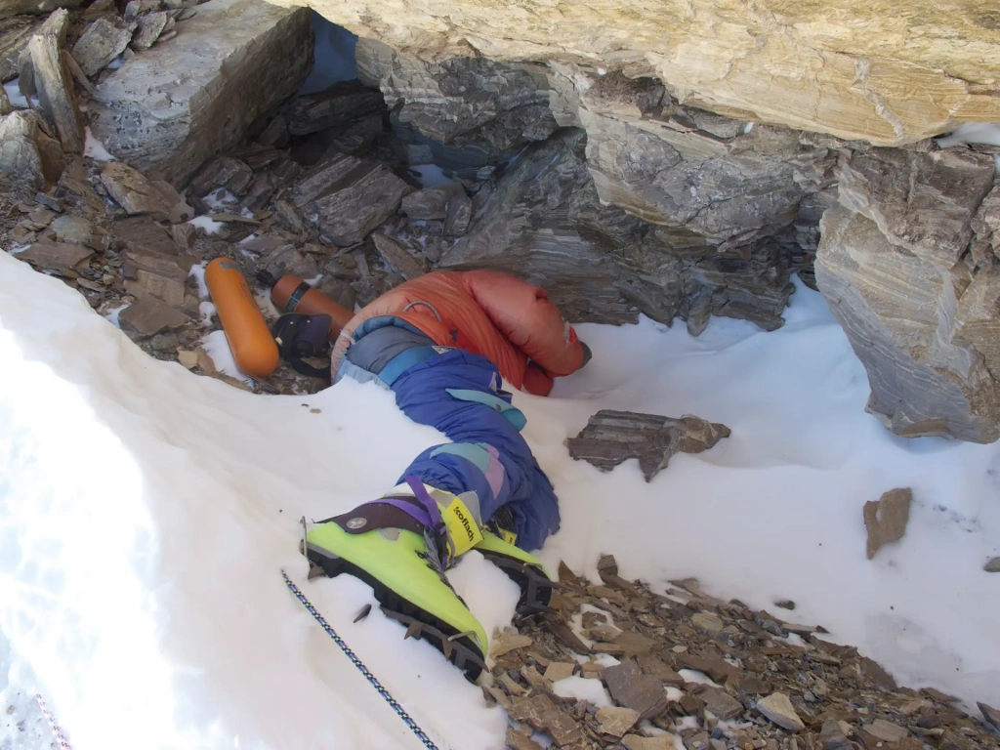
Are there dead bodies on Kilimanjaro?
There are also bodies on Kilimanjaro, but far fewer. Most are passengers of the Douglas DC-3 plane that crashed into Kilimanjaro's steep cliffs in May 1955. Additionally, there have been reports of lost solo travelers. Nowadays, the bodies of those who die during expeditions are easily evacuated.
Kilimanjaro's maximum height is 5,895 meters above sea level, the height of the Uhuru Peak. As you can see, the "roof of Africa" is well below the extreme altitudes of the world's most dangerous mountains. So, there is no such thing as the Kilimanjaro Death Zone. Therefore, problems similar to those faced by climbers on Everest and other eight-thousanders do not occur on Kilimanjaro.
Is there a death zone on Kilimanjaro?
Given the difference in maximum heights of Kilimanjaro and Everest, it is not entirely accurate to compare their danger levels. Instead, it is more appropriate to compare the heights of Kilimanjaro's main peak and the base camps on Everest. Everest has two base camps: the southern one in Nepal and the northern one in China. Climbers acclimatize in these camps before starting their summit expeditions.
Comparing the heights of Kilimanjaro and Mount Everest Base Camp
Heights above 5,500 meters (18,000 feet) are considered extreme, so there is a noticeable physical difference between Mount Everest's base camps and Kilimanjaro's summit. However, on Everest, this extreme altitude marks the beginning of the climb, while on Kilimanjaro, it is the end. Most people reach the summit only for a few hours, except for expeditions with overnight stays in the crater at 5,730 meters (18,799 feet).
What are the main causes of death on Kilimanjaro? What is the danger of Kilimanjaro?
In 2021, a group of medical doctors published a study conducted at the main medical center at the foot of Kilimanjaro—. The observations lasted two years. The scientists tracked the clinical picture of diseases and deaths of those admitted to the hospital after Kilimanjaro expeditions.
In total, 62 climbers were admitted to KCMC over two years. Of these, 56 were diagnosed with altitude sickness, which manifests in four ways:
- Acute Mountain Sickness (AMS)
- High Altitude Pulmonary Edema (HAPE)
- High Altitude Cerebral Edema (HACE)
- A combination of both edemas.
We discuss the symptoms and development of high-altitude pulmonary and cerebral edema in detail in our article on preparing for high-altitude climbs. Briefly, these are severe forms of acute mountain sickness that can quickly lead to death if patients are not evacuated from high altitudes.
Doctors recorded 21 deaths during the two-year observation period. This aligns well with our calculations of the annual mortality rate on Kilimanjaro. We estimated that about 10 tourists die annually, whose deaths become known. Most porters and guides, who are less likely to seek medical help, remain in the "gray zone" of statistics.
Most deaths occurred during expeditions, with 17 people dying on the mountain. The rest died after being admitted to the hospital. The most frequent cause of death was High-altitude Pulmonary Edema. The causes of death on Kilimanjaro are distributed as follows:
- High-altitude pulmonary edema (HAPE)—76% (16 cases)
- Combination of high-altitude pulmonary and cerebral edema—14% (3 cases)
- Cardiopulmonary disease—5% (1 case)
- Traumatic brain injury—5% (1 case)
What is the main cause of death on Kilimanjaro?
The average altitude at which symptoms of high-altitude pulmonary edema (HAPE) appeared was 4,600 meters (15,092 feet). The development of combined pulmonary and cerebral edema typically manifested at an average altitude of 5,000 meters (16,404 feet).
Who exactly dies on Kilimanjaro?
Of the 21 deceased, 19 were tourist climbers, and two were porters. The gender distribution was 20 men and one woman, with an age range of 18 to 81 years.
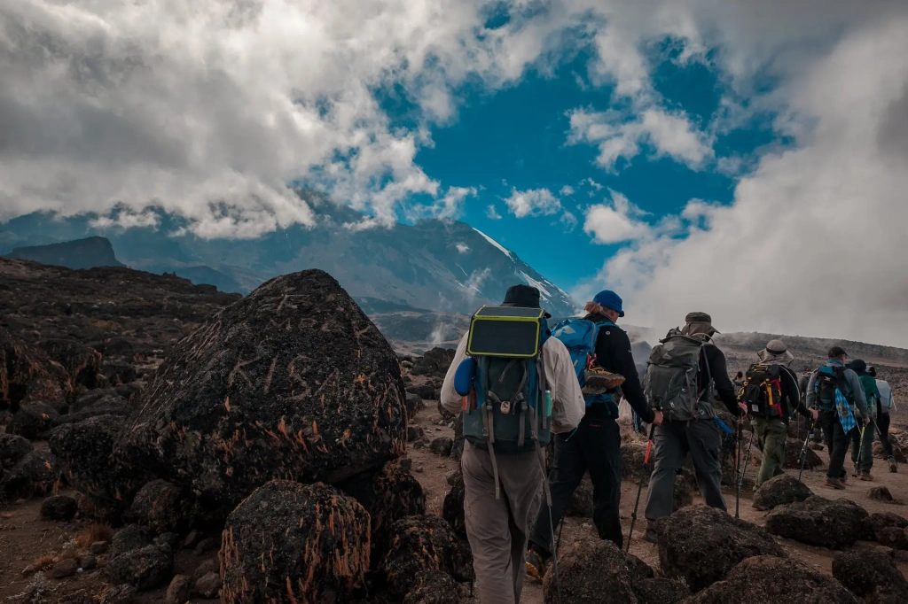
17 of the 21 died during the expedition, directly on the mountain. This occurred at altitudes between 3,800 and 5,895 meters (12,467 and 19,341 feet) above sea level. Two people died in hotels within a day after descending from Kilimanjaro, and two more died in KCMC hospital. Additionally, most of those who sought medical attention in the hospital completed their treatment successfully and were discharged with improved conditions. Over two years, this included 41 people, or 66% of all those included in the study. It's important to note that immediate evacuation and hospitalization are crucial when health deteriorates.
Why do organ edemas occur at high altitudes? What happens to your body when you climb Kilimanjaro?
The primary cause of high-altitude pulmonary edema is a rapid ascent to altitudes above 2,500-3,000 meters (8,200-9,800 feet). The body doesn't have enough time to adapt to the high altitude. What happens to a person's body? Starting at these altitudes, the air contains less oxygen. The lungs begin to conserve it by narrowing blood vessels and forcefully directing all available oxygen to the most critical areas. This increases pressure in the pulmonary arteries. Due to high pressure and heavy workloads, capillaries start leaking fluid, which accumulates in the lungs and increasingly impairs breathing.
What leads to pulmonary edema on Kilimanjaro?
This can be relatively easy to avoid. Just follow the simple rules that Angelino Adventures shares with climbers:
- The ascent should be slow, with moderate exertion during the climb.
- The body's acclimatization should be gradual.
- It's recommended to go on acclimatization hikes to higher altitudes during the day and sleep at a lower altitude.
- During the expedition, avoid unnecessary physical exertion, as well as alcohol and sleeping pills.
Why are there so many men in the statistics? The reasons may be that men have a larger body mass requiring more oxygen and that men often neglect health advice during the climb. Many believe that the relatively low height of Kilimanjaro and the ease of the climb allow for saving days. This is the "devilish trap" of the "roof of Africa." Additionally, some people, feeling unwell at high altitudes, decide to reach the summit at all costs, ignoring the recommendation to descend. In such circumstances, continuing the ascent and increasing the workload is a sure way to die on Kilimanjaro.
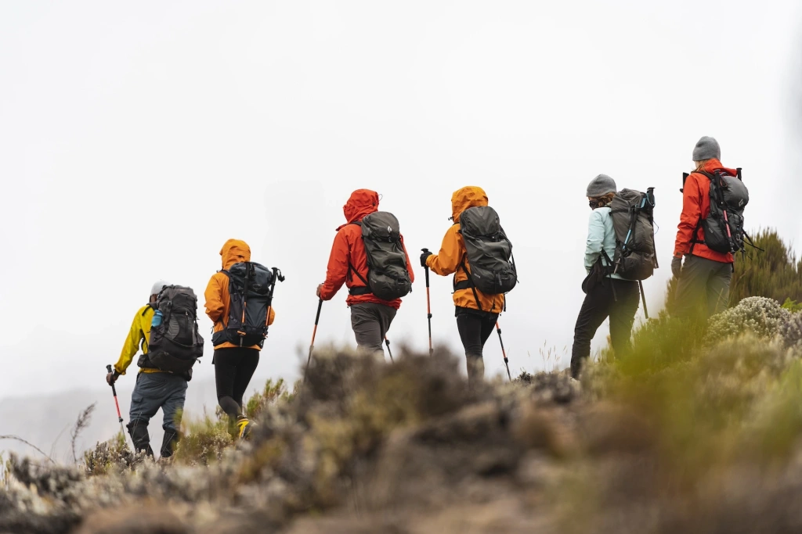
Medical calculations show that the safest approach to high-altitude climbing involves an ascent of 300-600 meters (984-1,969 feet) per day with sufficient rest for better acclimatization. All these medical recommendations are considered in Angelino Adventures's 7-8 day expedition programs.
How not to die on Kilimanjaro
We will explain how to avoid serious complications during a Kilimanjaro expedition that could lead to death. Since it's impossible to climb the mountain alone, the main task is to find a responsible tour operator. There are almost no companies without any fatalities on Kilimanjaro. Even the best operators, who have been working on the mountain for a long time and adhere to high safety standards, have recorded tourist deaths.
In our practice, there is only one fatal incident involving a tourist on the mountain—during the 2019 Wings of Kilimanjaro charity paragliding festival. After completing the ascent, Canadian athlete Justin Kyllo, an experienced paraglider pilot, made a fatal error during the flight. Another group of organizers was responsible for the flights, and Angelino Adventures was not involved in this part of the event.
Choosing a reliable tour operator
Using Angelino Adventures as an example, we will explain what to look for when choosing a tour operator for an upcoming expedition.
Responsible companies are members of KPAP (Kilimanjaro Porters Assistance Project), an organization that protects the rights of guides and porters. You can read about KPAP and Angelino Adventures's involvement in our article explaining what this organization does.
Guides and equipment
Good knowledge of Kilimanjaro routes, experienced guides, high-quality modern equipment, and fair wages for all members of the mountain teams—all indicate that the company is serious about safety in its expeditions.
Angelino Adventures's guides have been with us for 5-10 years, and their experience may even exceed these figures. They know the mountain well and can tell you about its history and nature. All our guides have completed the Wilderness First Responder course, meaning they can conduct evacuations in wilderness conditions.
Medical examinations, first aid kits, and oxygen
When choosing a company, pay close attention to the medical preparation of expeditions. Knowledge of rescuers, timely assistance, and applied resources are what make up the cost of life on Kilimanjaro. Cutting corners on this is not an option.
At Angelino Adventures, we are proud that there have been no emergencies during our expeditions throughout our operation. All our guides confidently apply their knowledge in practice and strictly follow safety protocols.
Twice a day, each group member undergoes a medical examination. Each expedition has fully equipped first aid kits of two types: camping and tactical. There are no situations where a guide doesn't have the necessary means of assistance and essential medicines at hand. Read about how Angelino Adventures uses first aid kits in the mountains.
Each of our mountain teams is equipped with oxygen systems that may be needed by climbers to assist with acclimatization and treat symptoms of altitude sickness. In this regard, we always take precautions to avoid a sharp deterioration in the condition of travelers. Additionally, we are always ready to quickly evacuate those who need hospitalization. For this, we cooperate with a helicopter company that assists with evacuations.
Moreover, all our guides closely monitor each climber's condition to prevent health deterioration. They know exactly what to do and when to improve the situation. Guides promptly remind climbers of the main rules of climbing:
- Maintain a moderate and comfortable pace
- Drink enough water
- Participate in acclimatization hikes
- Eat properly
- Keep the body and clothes warm and dry
- Do not skip medical examinations
Those who want to choose a reliable tour operator for Kilimanjaro climbs should read the article "Why Choose Angelino Adventures." In it, we explain what we have done over 10 years of operation to achieve high safety standards.
We will not name the companies whose clients have died, as it is unethical. Fatalities among climbers are present with almost all top operators. But we urge you to take the dangers that Kilimanjaro presents to unprepared individuals seriously.
All content on Angelino Adventures is created with expert insights and thorough research, in line with our Editorial Policy.


Want to know more about Tanzania adventures?
Get in touch with our team! We've explored all the top destinations across Tanzania. Our Kilimanjaro-based adventure consultants are ready to share tips and help you plan your unforgettable journey.
 Tanzania Safaris
Tanzania Safaris
 Kilimanjaro and other mountains
Kilimanjaro and other mountains
 About Tanzania
About Tanzania
 Tanzania Islands
Tanzania Islands